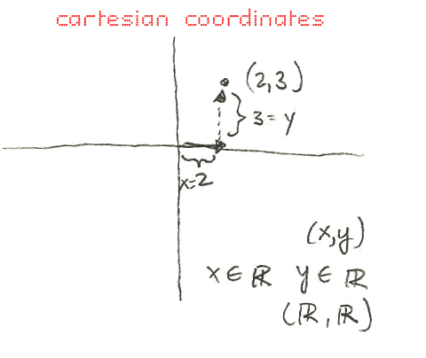

Personal Sketches: An Alternative Coordinate System (Not Polar, Not Cartesian)
by phil on Saturday Apr 24, 2004 7:34 PM
fun with math
Ezra and I were trying to find an alternative coordinate system. I did some googling and only found the common two, Cartesian and Polar, plus some celestial ones. The celestial ones aren't interesting because they only concern the bounded space of the night-sky.
{kind=link}
I sought to find a coordinate system other than Cartesian and Polar that required "less" information.
Here is the most common coordinate system:

Here is the second most common coordinate system:
And here is an original system we came up with.
There is no real benefit to the dual-ray system. At first it seems to use "less" information because the range of its coordinates are bounded by 0 and 2*pi versus the polar and the cartesian which rely on at least one unbounded coordinate. In computers, representing cartesian coordinates may require you to expand the storage space for coordinates should you have an unbounded point. You can reduce the precision in those cases by calling a point like 4.87283e16 or something. At first this seems the dual-ray would beat out the cartesian, but points could require more decimal places than possible to store to be precise. Plus, the intersection of two rays may also be imprecise. There is also another problem with the dual-ray system in that you cannot represent any points along the line between the two origins. Ezra suggested just giving a real number in those situations rather than a tuple.
The whole process was fun and we learned a lil' more about the way coordinate systems work. Not every coordinate system needs to have one origin, but we think it needs at least one. You can also vary the kinds of information needed by the coordinates by preceding your coordinate system with extra-information. In the case of the dual-ray system we precede our system with a k-value, which should be, by default, the unit length. This fixes the second ray which then aids in the coordination. The cartesian system, on the other hand, offers no flexibility as to the axis, and requires that they are at right angles.
Here are other coordinate systems that didn't make the cut.
This system required too many bubbles to represent points, was ambiguous, and cumbersome. But hell, it looks cool; I wonder if aliens think in terms of bubble-coordinates.
Recrusive drilling down from large to small is the philosophy in the "Recursive-Square System." Requires more information, but still a valid system.
Below is perhaps a more serious attempt and relates to the concept of "cardinality." What we sought was to represent a coordinate with just one real number. Unfortunately, it is impossible to be precise with two-space using just one real because at every x-coordinate of real points, there are an set of numbers with the same size as the real numbers that occupy the associative y-coordinates. Maybe there is a way, but we just don't know about it.
Nonetheless, we came up with an enumerative method that works but just requires that the user pre-specify a precision, which determines the compression of the spring. This is not practical either because as the numbers deviate from the origin they grow polynomially (n^2). And so, you might as well just use two real numbers.
Google around for more information, and if you find cool coordinate systems, let me know
Comments
Bob said on April 26, 2004 12:46 AM:
Very cool stuff, thanks for drawing them out...it's all a matter of perspective.
kube said on April 28, 2004 10:48 PM:
Another disadvantage of the dual ray system is that it fails when you add a z-axis or third dimension...Actually, I just thought about it more and I guess you would just add a third ray bounded by 0 and 2*pi to specify how far you should rotate around the y-axis. Doh. I thought the spring compression idea was pretty brilliant. Is it possible to extend this idea into three dimensions, still using only two numbers.
kube said on April 28, 2004 11:17 PM:
Well, in 3 dimensions the spring/spiral would be like a tornado or a cone. And you'd have to specify the rate at which the cone opens up with a third number. So the answer to my question is no.
Philip Dhingra said on April 29, 2004 12:15 AM:
How about you just rotate the spiral on its side at a constant rate? So imagine my drawing above but that the spiral was also rotating out of the page.
As you add more dimensions it gets much much harder to cover as many points.
kube said on April 29, 2004 7:48 AM:
I think I see what you are saying now. It's like a cinnamon roll coordinate system. This coordinate system thing actually kept me up last night. I tried to come up with my own, but I ended up reinventing the wheel (my thoughts led me to rediscover the polar coordinate system all over again). Then I was trying to throw in abstract things like color and strange symbols, but that just drove me insane. Then I thought maybe since the two angles in the dual ray system are bounded by 0 and 2*pi, that maybe you could use one number to capture both of them. Then that single number could be broken down into its constituents. For instance, "perfect numbers" were studied by none other than Pythagoras: http://www-gap.dcs.st-and.ac.uk/~history/HistTopics/Perfect_numbers.html (by the way, I'm not sure if he was a sophist like your description of philosophistry claims. You might be thinking of Protagoras, but then again, maybe you are right). Well, back to perfect numbers. The number 6 can represent the numbers 1, 2, and 3. Wee. Then I thought about how every natural number can be expressed as a product of primes. Then I thought about the Fibonacci sequence. These thoughts led me well...nowhere. It was like freshman physics when I spent a whole page solving a problem, only to find out that....low and behold...F = ma!....When that's what I started with. 'twas a fun exercise though! I'd probably be able to contribute more if I were a number theorist or something.
I read that you are a mathematical and computational sciences major. Very cool. I thought about going into that field. Then again, I've thought about going into just about every field. I imagine it would be very useful if you could reduce the number of terms required to specify a point in space. But it seems like there would always be extra calculations/instructions involved to generate additional numbers, and that would defeat the whole purpose. I imagine the Cartesian system is the most popular because it's the easiest for us humans to visualize. It'd also be hard to make graph paper for the dual ray system.
This isn't related to coordinate systems, but you should check out this link I found the other day, if you've never read it. It's a speech by Larry Wall, creator of Perl. It's called: Perl, the first postmodern computer language. You might like it.
http://www.wall.org/~larry/pm.html
Philip Dhingra said on April 29, 2004 8:10 AM:
Protagoras. Yes, it's him all right--my first post where I talk about the philosopher and sophist distinction is so messed up, oh well.
This kept you up too? Ezra and I were up till two playing with this, then I spent another hour trying to convince him that the origins of the universe were comprehensible. Needless to say, he couldn't be convinced.
You can actually encode the dual-ray system with one real number bounded by 0 and 1. You just make every other digit represent one ray, and the other ones represent the other ray. And you also map 0 to 0 and 2*pi to 1.
Larry Wall's brilliant; I haven't read this one yet though, bbiab.
Philip Dhingra said on April 29, 2004 1:17 PM:
Part of the trick is in taking advantage of what you got.
In the case of a 2D coordinate system, what do you have? Well you have an origin, or you can have multiple origins. Well, do you know what we also have? A full, infinitely spacious flat plane.
Here's how to fix the dual-ray's problem of having the line between the two points impossible to describe. Have two origins, one in the plane where all the points are going to be, and one floating one unit above in the z-direction. Then you have a ray pointing from that floating origin, give it a rotation around the z-axis and another one around the y-axis, and what you got is a laser pointing down and intersecting the plane at a single point.
This still requires two angles, but at least we only need one ray.
Theoretically, you could do the same with any n-dimension space. Create an n+1-dimension space, put an origin one unit "above" the original "flat" n-dimension space, and give it some angles to pierce the "flat" n-dimension space.